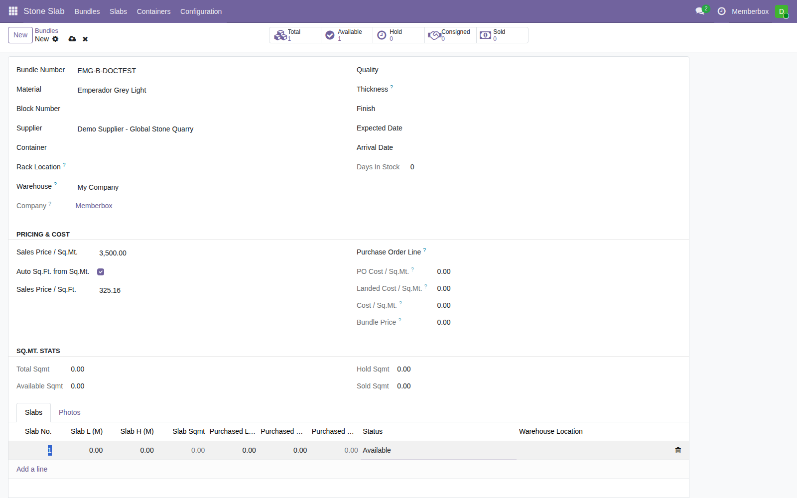
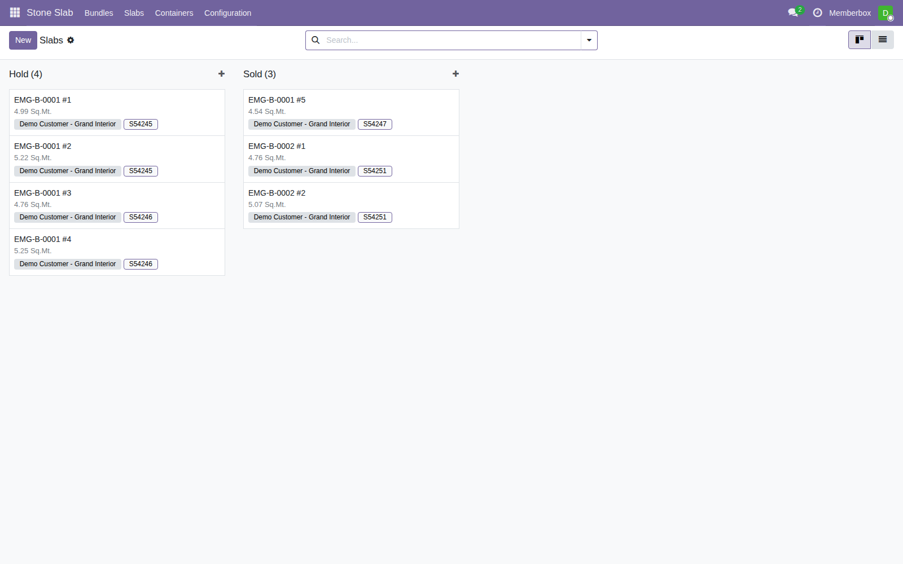
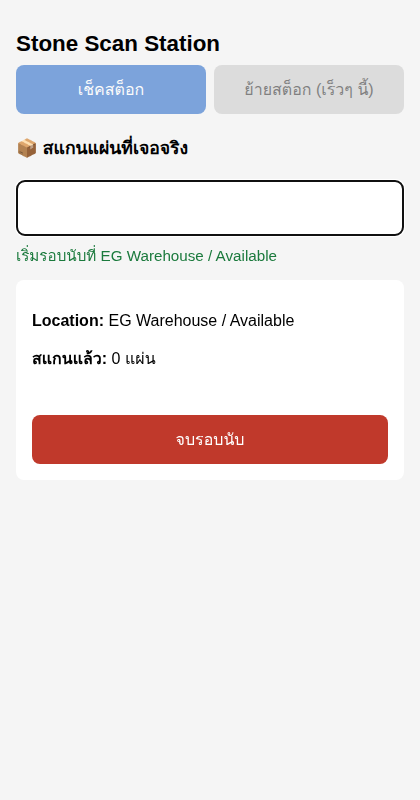
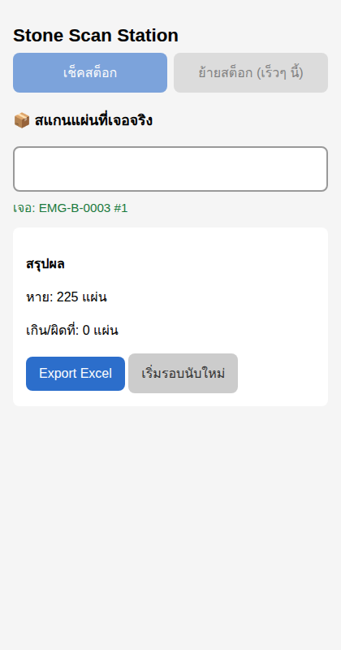
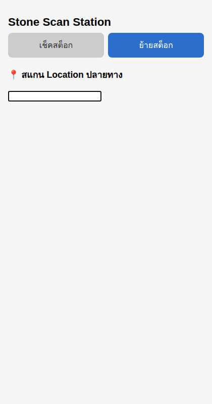
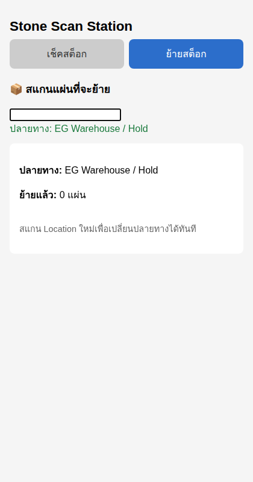
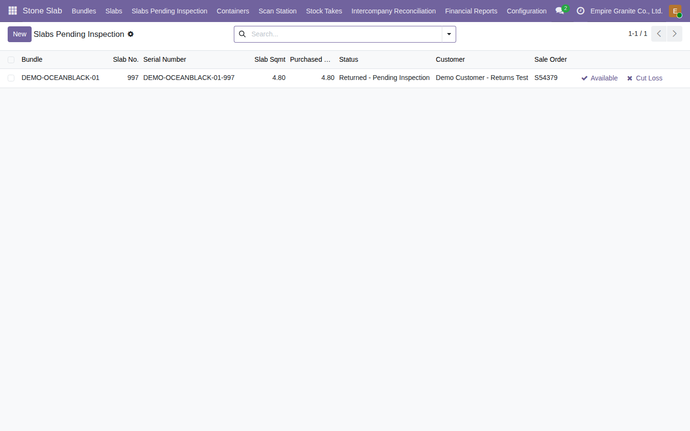
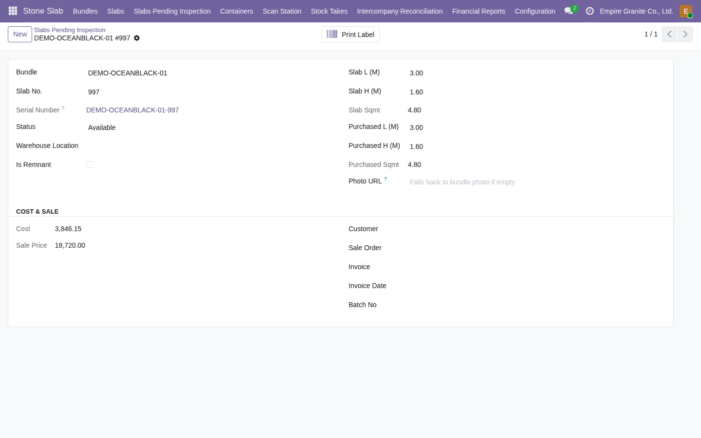

EO
Empire Granite · Ensure Supply
การจัดการสต็อก
(Inventory)
ตั้งแต่ตัดแผ่นเข้าคลัง เช็คสต็อกหน้างานด้วยเครื่องสแกน จนถึงรับคืนสินค้า
EMG-O Overview · การจัดการสต็อก
ภาพรวม · สถานะแผ่นหิน (Slab Status)
แผ่นหินแต่ละแผ่น ต้องรู้ตลอดเวลาว่าอยู่สถานะไหน
?
โจทย์
พนักงานคลังต้องรู้ว่าแผ่นหินแต่ละแผ่นอยู่ที่ไหน สถานะอะไร ตลอดเวลา — ไม่ใช่แค่ตอนขาย เพราะแผ่นเดียวกันอาจถูกกัน (Hold), ฝากขาย (Consigned), ขายแล้ว, หรือถูกลูกค้าคืนกลับมาก็ได้
⇄
Hold / Consigned
กันไว้ให้ลูกค้า / ฝากขาย
→
⇄
Returned Pending Inspection
ลูกค้าคืน รอตรวจสอบ
สถานะ → ความหมาย
| สถานะ | ความหมาย | เปลี่ยนได้จากไหน |
|---|
| Available | พร้อมขาย | Kanban ลาก-วาง / Scan Station ย้ายสต็อก |
| Hold / Consigned | กันไว้ให้ลูกค้าที่ยังไม่ผ่าน SO / ฝากขาย | Kanban ลาก-วาง / Scan Station ย้ายสต็อก |
| Sold | ขายและส่งของแล้ว — ย้ายจากหน้า Scan Station ไม่ได้ | Delivery จริงเท่านั้น |
| Cut Loss | เศษ/ของเสียจากการตัด หรือแผ่นคืนที่ชำรุด | ตอนตัด หรือหน้า Returns หลังตรวจสอบ |
| Returned - Pending Inspection | ลูกค้าคืน รอพนักงานตรวจสภาพก่อนตัดสินใจ | อัตโนมัติเมื่อ Validate ใบรับคืน |
ขั้นตอนที่ 1 · ตัดแผ่น (Add Slab Line)
1 แผ่น = 1 Serial Number จริง ไม่ใช่แค่ตัวเลขนับ
Bundle → tab Slabs→
Add a line→
กรอกขนาด (L, H)→
Save
1
สถานการณ์จริง
ก้อนหินมาถึงคลังแล้ว (มี Bundle จาก PO ตาม deck การจัดซื้อ) ต้องตัดแผ่นจริงแล้วบันทึกเข้าระบบทีละแผ่น — แต่ละแผ่นในบันเดิลเดียวกันขนาด/ผิวหน้าต่างกัน ลูกค้าอาจเลือกแผ่นเฉพาะเจาะจง
ข้อมูลที่กรอก → Key ที่ไหนใน Odoo
| ข้อมูล | ตัวอย่างค่าจริง | ตำแหน่งใน Odoo |
|---|
| Slab L / Slab H | ขนาดจริงที่วัดได้ | Bundle → tab Slabs → Add a line |
| Slab Sqmt | คำนวณให้อัตโนมัติ | ฟอร์มเดียวกัน (readonly) |
| Serial Number (Lot) | สร้างให้อัตโนมัติ — 1 แผ่น = 1 lot จริง | ไม่ต้องกรอก — ใช้พิมพ์ป้าย/สแกนยืนยันตอนส่งของ |
| Slab No. | กำหนดไม่ซ้ำกันอัตโนมัติในบันเดิลเดียวกัน | ไม่ต้องกรอก — ถึงเพิ่มหลายแผ่นพร้อมกันก็ไม่ชนกัน |
ขั้นตอนที่ 1 · ตัดแผ่น (Add Slab Line)
รายละเอียดขั้นตอน
- 1เปิดฟอร์ม Bundle → tab "Slabs" → "Add a line"
- 2กรอกขนาด Slab L / Slab H — Slab Sqmt คำนวณให้อัตโนมัติ สถานะเริ่มต้นเป็น "Available"
- 3Save — ระบบหัก CBM จากก้อนหินให้อัตโนมัติ (ถ้า Material นั้นมี Block Product ผูกอยู่ มี guard กัน CBM ติดลบ)
- 4ระบบสร้าง Serial Number + Slab No. + stock.move รับแผ่นเข้า location "Stone Available" ให้ครบอัตโนมัติ
ทำไมต้องมี Serial Number ต่อแผ่น: พนักงานสแกนยืนยันได้ตอนส่งของว่าหยิบแผ่นถูกจริง ไม่ใช่แผ่นอื่นในบันเดิลเดียวกัน

เพิ่มแผ่นใหม่ — กรอกขนาด ระบบคำนวณ Sqmt ให้

Slab Kanban Board — แผ่นใหม่ขึ้นในคอลัมน์ Available
ขั้นตอนที่ 2 · ดูภาพรวมสต็อก (Kanban / List)
ลาก-วางเปลี่ยนสถานะได้เลย ไม่ต้องเปิดฟอร์มทีละแผ่น
2
สถานการณ์จริง
หัวหน้าคลังอยากเห็นภาพรวมสต็อกทั้งหมดแบบเร็วๆ — ทั้งดูสถานะรวม และดูรายละเอียดของแผ่นใดแผ่นหนึ่งที่ผูกกับลูกค้า/SO ไหนอยู่
มุมมอง → ใช้ตอนไหน
| มุมมอง | ใช้ตอนไหน | ตำแหน่งใน Odoo |
|---|
| Kanban Board | เปลี่ยนสถานะเร็วๆ แบบ Trello — ลาก-วางการ์ดข้ามคอลัมน์ ระบบ sync stock.move ให้เอง | Stone Slab → Slabs (ค่าเริ่มต้น) |
| List View | ดูรายละเอียดทุกแผ่น — Bundle, Slab No., ขนาด, สถานะ, ลูกค้า, เลข SO, Serial Number | ปุ่มสลับมุมมอง (ขวาบน) |
ขั้นตอนที่ 3 · Scan Station — เช็คสต็อก (นับของจริง)
เครื่องมือแยกต่างหาก ไม่ต้อง login เข้า Odoo เต็มระบบ
เข้า /stone-scan→
สแกน Location→
สแกนแผ่นที่เจอจริง→
"จบรอบนับ" → ดูผล
3
สถานการณ์จริง
หัวหน้าคลังต้องนับสต็อกจริงประจำงวด เทียบกับที่ระบบคิดว่าควรมี — ใช้เครื่องสแกนบาร์โค้ด (Bluetooth/USB) หน้างานได้เร็ว โดยไม่ต้องไล่หาเมนู Inventory ปกติ
ข้อมูลที่สแกน → Key ที่ไหนใน Odoo
| ข้อมูล | ตัวอย่าง | ตำแหน่งใน Odoo |
|---|
| Location | บาร์โค้ดหน้าโซนจัดเก็บจริง (Available/Hold/Consigned) | หน้า /stone-scan → โหมดเช็คสต็อก |
| แผ่นที่เจอจริง | บาร์โค้ดเดียวกับที่พิมพ์ติดแผ่นตอนตัด | หน้าเดียวกัน — สแกนต่อเนื่องได้เรื่อยๆ |
| ผลลัพธ์ | หาย / เกิน-ผิดที่ | กด "จบรอบนับ" → ดูสรุป หรือ Export Excel |
ระบบไม่แก้ข้อมูลให้อัตโนมัติ: ผลลัพธ์เป็นแค่รายงาน ต้องตรวจสอบเองแล้วไปแก้สถานะแผ่นด้วยมือผ่านหน้า Bundle/Slab ปกติ
ขั้นตอนที่ 3 · Scan Station — เช็คสต็อก (นับของจริง)
รายละเอียดขั้นตอน
- 1เข้า `/stone-scan` (หรือเมนู Stone Slab → Scan Station) → login ด้วยบัญชีตัวเอง
- 2สแกน Location ที่จะนับ — ระบบเปิด "รอบนับ" ใหม่ทันที
- 3สแกนแผ่นที่เจอจริงในโซนนั้นไปเรื่อยๆ — สแกนซ้ำไม่นับเพิ่ม, บาร์โค้ดที่ไม่มีในระบบขึ้นแจ้งเตือนไม่กระทบตัวนับ
- 4กด "จบรอบนับ" — ดูสรุป Missing/Extra หรือกด Export Excel เก็บเป็นหลักฐาน

เริ่มรอบนับแล้ว — พร้อมสแกนแผ่นที่เจอจริง

สรุปผล — Missing / Extra เทียบกับที่ระบบคาดไว้
ขั้นตอนที่ 4 · Scan Station — ย้ายสต็อก (Relocate)
ย้ายแผ่นจริงหน้างาน ระบบกันย้ายผิดพลาดให้ครบ
สลับโหมด "ย้ายสต็อก"→
สแกน Location ปลายทาง→
สแกนแผ่นที่จะย้ายทีละแผ่น→
ย้ายทันที
4
สถานการณ์จริง
ต้องกันแผ่นไว้ให้ลูกค้าที่มาดูของหน้าร้านโดยยังไม่ผ่าน SO — ย้าย Available → Hold เร็วๆ หน้างาน หรือคืนแผ่นที่กันไว้กลับ Available เมื่อลูกค้าไม่เอาแล้ว
ขอบเขตที่ตั้งใจไว้ (ป้องกันย้ายผิดพลาด)
| กฎ | รายละเอียด |
|---|
| ปลายทางที่สแกนได้ | Available / Hold / Consigned เท่านั้น — Sold มาจาก Delivery จริงเท่านั้น, Cut Loss ต้องตัดสินใจแยกต่างหาก |
| แผ่น Sold / Cut Loss แล้ว | ย้ายจากหน้านี้ไม่ได้ — ระบบขึ้น error ทันที กันย้อนสถานะขาย/ตัดขาดทุนโดยไม่ตั้งใจ |
| ย้ายข้ามคลัง | ระบบบล็อก — ปลายทางต้องเป็นคลังเดียวกับที่แผ่นนั้นสังกัดอยู่ |
ขั้นตอนที่ 4 · Scan Station — ย้ายสต็อก (Relocate)
รายละเอียดขั้นตอน
- 1กดปุ่ม "ย้ายสต็อก" ด้านบนเพื่อสลับโหมด
- 2สแกน Location ปลายทางที่ต้องการย้ายแผ่นไปอยู่
- 3สแกนแผ่นที่จะย้ายไปทีละแผ่น — ระบบย้ายให้ทันทีที่สแกนสำเร็จ ไม่ต้องกดยืนยันซ้ำ
- 4เปลี่ยนปลายทางเมื่อไหร่ก็สแกน Location ใหม่ได้เลย
สแกนแผ่นที่อยู่ตำแหน่งนั้นอยู่แล้ว? ระบบขึ้น "อยู่ตำแหน่งนี้อยู่แล้ว" เฉยๆ ไม่ทำอะไรซ้ำ

โหมดย้ายสต็อก

ตั้ง Location ปลายทางแล้ว — พร้อมสแกนแผ่นที่จะย้าย
ขั้นตอนที่ 5 · การคืนสินค้า (Returns / RMA)
ทางย้อนกลับจาก "Sold" ที่ไม่เคยมีมาก่อน
กด Return จากใบส่งของเดิม→
Validate→
สถานะ "Returned - Pending Inspection"→
ตรวจสอบ + ตัดสินใจ
5
สถานการณ์จริง
ลูกค้าคืนแผ่นหิน (ผิดขนาด/ชำรุดจากขนส่ง/ยกเลิกงาน) — เดิมสถานะแผ่นค้างเป็น "Sold" ตลอดไป มองไม่เห็นใน Select Slabs wizard ทั้งที่ของจริงกลับเข้าคลังแล้ว
ข้อมูลที่ต้องทำ → Key ที่ไหนใน Odoo
| ข้อมูล | ต้องทำยังไง | ตำแหน่งใน Odoo |
|---|
| Return | ใช้ปุ่ม Return มาตรฐานของ Odoo | Delivery Order เดิม → ปุ่ม "Return" |
| ตรวจสอบรายการรอตรวจ | ดูทุกแผ่นที่รอตรวจสอบ ข้าม Bundle ได้ ไม่ต้องเปิดทีละใบ | Stone Slab → Slabs Pending Inspection |
| ตัดสินใจ | "ตรวจแล้ว: ขายต่อได้" (→ Available) หรือ "ตรวจแล้ว: ชำรุด" (→ Cut Loss) | ปุ่มในหน้า list หรือฟอร์มแผ่น |
ขั้นตอนที่ 5 · การคืนสินค้า (Returns / RMA)
รายละเอียดขั้นตอน
- 1พนักงานกดปุ่ม Return มาตรฐานจากใบส่งของเดิม (Delivery Order → Return)
- 2Validate ใบรับคืน — ระบบตรวจจับอัตโนมัติว่าเป็นการคืนสินค้าจริง แล้วเปลี่ยนสถานะแผ่นเป็น "Returned - Pending Inspection" ทันที
- 3ไปเมนู Slabs Pending Inspection → ตรวจสอบสภาพแผ่นจริง
- 4กดปุ่มตัดสินใจ — Bundle แต่ละใบก็มีปุ่ม "Returned" (smart button) โชว์จำนวนที่รอตรวจของ Bundle นั้นด้วย
ทำไมต้องมีขั้นตอนตรวจสอบ ไม่ auto-resolve ทันที: แผ่นหินอาจชำรุดจากการขนส่งจริง ต้องให้คนตรวจสภาพก่อนตัดสินใจเสมอ

รายการแผ่นที่รอตรวจสอบทั้งหมด ข้าม Bundle ได้

ตรวจแล้ว: ขายต่อได้ — กลับเป็น Available ปกติ
สรุปภาพรวม
จากตัดแผ่นแรก ถึงรับคืนสินค้า — ครบวงจรสต็อก
ตัดแผ่น (Slab)→
ดูภาพรวม (Kanban)→
เช็ค/ย้ายสต็อก (Scan Station)→
รับคืนสินค้า (Returns)
จำไว้เสมอ
Scan Station ย้ายสต็อกได้เฉพาะ Available/Hold/Consigned — แผ่น Sold/Cut Loss ต้องผ่าน Delivery หรือ Returns เท่านั้น
ผลนับสต็อกไม่ตรง?
ระบบไม่แก้ให้อัตโนมัติ — Export Excel ส่งหัวหน้าคลังตรวจสอบ แล้วไปแก้เองที่ Bundle/Slab
มีคำถามเพิ่มเติมระหว่างใช้งานจริง ติดต่อทีมงานได้ตลอดเวลา